ساختهشده برای فردایی سبزترزندگی پایدار،
زندگی پایدار،
ساخته از طبیعت.
خانههایی از خاک و چوب که نور، فصل و شیوهٔ زندگی ساکنان را جدی میگیرند.
معماری با ردّ پای کمتر.
خانهای را تصور کن که در زمستان آفتاب را جمع میکند و در تابستان سایه دارد. کار ما از شناخت اقلیم زمین آغاز میشود.
خدمات دفتر

طراحی معماری پایدار
مسیر نور، تهویه و نسبت فضاهای باز را پیش از ترسیم پلان بررسی میکنیم.
مشاورهٔ ساخت سبز
بودجه، مصالح محلی و ظرفیت زمین را کنار هم میگذاریم.
مرمت با مصالح طبیعی
راهی برای ماندنِ شخصیت خانه و استفادهٔ دوباره از بنا پیدا میکنیم.
پروژههای منتخب
پرسشهای رایج
طراحی از کجا شروع میشود؟
ابتدا زمین، بودجه، نیازهای فضایی و محدودیتهای اقلیمی را مرور میکنیم.
میتوان بنای موجود را بازسازی کرد؟
بله، مسیر طراحی از بازدید و ارزیابی سازهٔ موجود میگذرد.
 انتخاب این قالب
انتخاب این قالب